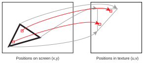
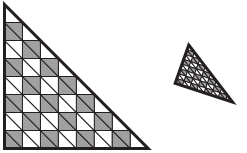

Page 13: Texture Basics
In the past, texture concepts were covered in the lectures. The workbook page was a list of things “you should have learned in class.” I am hoping that interactive demonstrations of the tricky parts will help students understand the concepts better.
Like many things, the high-level APIs make texturing easy to use, without understanding how it actually works. I think it is important to understand the key concepts in order to use the various forms of texturing.
The rough outline of this “section” of the workbook/class:
- We’ll start with the core concepts of texturing: how we define coordinate systems and look up information. We will focus on a specific kind of texture (surface colors).
- We will dig into some of the details of how texturing works. We’ll look at it in regular texturing, but the concepts will apply in more advanced texturing.
- We will practice texturing using regular color-based textures.
- We will learn about some more advanced uses of texturing to achieve different kinds of effects. With these, we will focus on trying to use them (since they are implemented well in three.js).
- We will have a few exercises at the end to let you practice using textures.
A lot of the concepts of texturing connect to both the theory of image formation (very foundational graphics stuff) and the practical details of how the graphics hardware works. We will use texturing as a way to motivate these topics, but we will explore them in depth later.
The videos on texturing were created as a series of “mini lectures” (4 shorter parts, rather than one longer lecture). For various reasons, I had been re-using them repeatedly.
The first video (18A, Texturing Overview) was actually made to be a final review, but we found it works really well as an introductory overview. It is practical - showing you how to do it in three.js, to motivate what you will learn about the concepts. One caveat: it refers to the old three.js Geometry data structures. You can skip that. This is one case where the new BufferGeometry is easier.
The Big Picture
This video gives the basic ideas of textures very well:
Texturing is a way to add details to a scene without making the geometry more complex. Effectively, it provides a way to make a decision about appearance for every pixel on the screen - without having to make triangles that are pixel-sized.
For now, we’ll talk about using the texture to control colors. We’ll also focus on determining the colors based on an image. This is the most common form of texture mapping.
The obvious catch is that we can’t know the pixels ahead of time: a triangle may be big or small on the screen. We need to define the textures in a way that is independent of the actual pixels, and then compute the texture for each pixel.
The idea is that when the triangle is drawn, each pixel Pixel is a slight oversimplification. We will explore the subtleties later. looks up its color in an image. This requires a mapping from the position of the pixel on the triangle to a position in the image. We call these positions in the image texture coordinates.
{kind=link}

As the graphics hardware colors each pixel, it knows the position on the triangle and uses this to compute the texture coordinate so it can perform the color lookup. As programmers, we don’t know the pixel positions ahead of time. We define the mapping for the whole triangle by specifying the texture coordinates for each of the vertices of the triangle.
There are two parts of the process we need to understand: (1) how we assign texture coordinates to triangles to control where in the images they get their colors from; and (2) how the graphics hardware will look up the colors, so we can prepare things for it.
Why Not Just Use More Triangles?
The alternative to texturing would be to break our triangles into smaller triangles, so that each one could have a different color.
{kind=link}

This has some obvious, and some non-obvious, downsides:
- When designing the object, we need to design it as a collection of triangles. We can’t just paint (or photograph) pictures.
- We might need a lot of very small triangles. This means a lot of triangles to maintain, keep attached together, transform and draw, etc.
- As we move the triangle around, we need to make sure that all of the triangles that make it up are adjusted accordingly.
- We may want to capture small details that will end up being smaller than a pixel. In such a case, we will need to figure out what happens when a lot of triangles end up in one pixel.
- When we have large numbers of small triangles, small numerical problems can cause them to not fit together perfectly.
Texturing addresses all of these problems.
- It allows us to use pictures to define the colors on the surfaces of objects.
- We can define the details of the picture independent of the geometry of the object; we can put a highly detailed picture on a simple object (made of large triangles).
- Because the colors are attached to the triangles, they move correctly as the triangles move.
- We can use well-defined image processing techniques (filtering) to make sure that merging details together into a small space works out correctly. This isn’t trivial, but it is a lot easier than trying to have a large number of triangles fighting with each other.
- We don’t need to make tiny triangles. We can perform coloring per pixel (or at whatever rate we want), and have this attached to the right place on a bigger triangle.
How do we do this?
Here’s a simple example, using the class software framework.
The main idea here is you can see a triangle floating in space (you can move the camera), and this triangle has colors mapped to it. The colors come from an image file (shown on the right). The portion of the image used is defined by giving each vertex of the triangle a position in the image. The “texture-space” triangle is shown as a yellow line in the texture image.
Here we can see the three.js code that implements the texturing. It matches very directly with the concepts.
First, we need to assign texture coordinates.
|
|
Next, we need to define a material that uses the texture for its colors:
|
|
The key things here are:
- We need to load in the image file and tell three.js to process it as a texture. This is done on line 39. It creates a texture object (with deferred loading).
- We define the color to be white (41), since this “base color” gets combined with the colors from the texture.
- We attach the texture to the object (42).
- We need to give the other properties of a
MeshStandardMaterial- the colors of the surface come from the texture, but the lighting calculations still happen. They just use this color as the diffuse color.
Three.js takes care of everything else for us in terms of setup. The graphics hardware takes care of performing the texturing computation for every pixel on the triangle.
Image-Based, Triangle-Interpolated Textures, for Color Maps
The specific kinds of textures we’re doing are:
- Triangle coordinate interpolation (for texture coordinates): We’ll put UV values on each vertex of the triangle. The system will interpolate these values for each pixel.
- Image-Based Texture Lookup: Given the u,v coordinate for a pixel, we’ll look up its value in an image.
- Color Maps: we’ll use the value we looked up in the image as the color for the pixel. We may use this as the material color (so it is affected by lighting), or we might just use the color directly (so it won’t be affected by lighting).
Coming Attractions
For each of the previous choices, there are lots of other choices, and lots of details to consider. With THREE, we don’t need to worry about the details: it will make reasonable choices for us. In the future, we will want more control over these choices, and we’ll want to try different kinds of texturing.
- Coordinates: we’ll see different ways to determine texture coordinates in order to make solid materials (like wood and stone) or to achieve fancy effects like reflection.
- Texture Lookup: we’ll see how the image lookup process can cause problems, and how we can control the process to get better quality. We’ll also look at alternatives to using pre-defined images (procedural textures).
- Texture Use: rather than controlling the color, we can control other aspects of the appearance. We’ll look at adjusting material properties, apparent shape, lighting, etc.
Summary: Texturing
Key concepts we need:
- The idea of texture coordinates
- Why we need triangle coordinates, and the idea of UV coordinates on triangles
- The idea of image-based texture lookup
- Why we need filtering for texture lookups
(optional) If you want to look this up in the books (see the index page for a discussion of the books): FCG4 Chapter 11 covers texturing, describing it in a very general way. Section 11.1 gives the main ideas, and 11.2 gives many different types of textures - we’ll focus on what’s described in 11.2.2. Real-Time Rendering discusses texturing in great detail.
On the next pages, we’ll look at some details in how textures work.
Next: Page 14 - Texture UVs